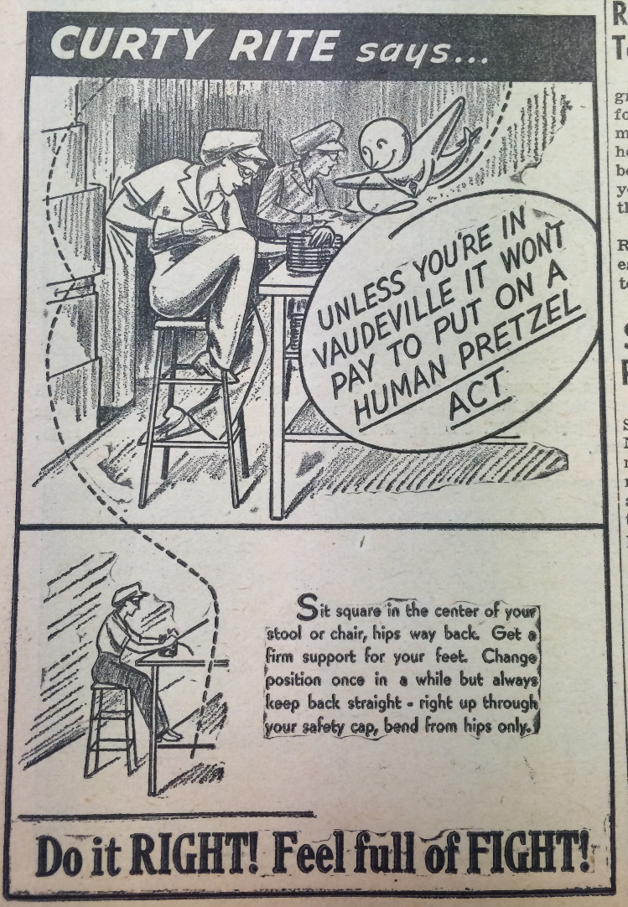
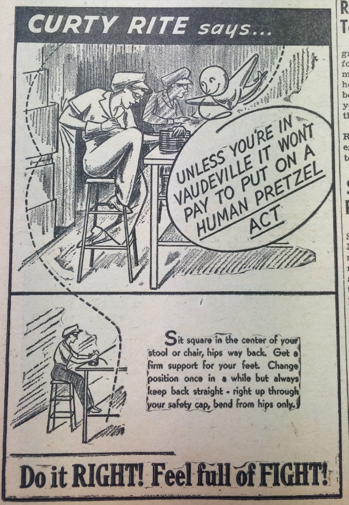

Shaping Up
Physical Culture Initiatives for Women in the United States, 1900-1965
Amanda Regan
Left: Preparatory Exercises from J.A. Beaujeu's A Treatise on Gymnastic Exercises, 1828
Right: Upper extremity exercises from Catherine Beecher's Calisthenics Exercises for Home, Schools and Families, 1856
“What we are coming to. The Bicycle Race of the Up-to-Date Women in the Near Future”, The Fort Worth Gazette, January 28, 1895.
“Exercise by female pupils at D-St Gymnasium", Boston Daily Globe April 8, 1902.
“Scenes at the women's gymnastic exhibition in South Boston," Boston Daily Globe, April 16, 1901.
“Complete Gymnasium in Every Home: A Rolling Pin Serves as a Wand--Potato Mashers Take the Place of Dumbbells--Chairs Serve as Vaulting Horses--Pulling the Window Shades Up and Down Develops the Chest as Pully Weights Do--All These Things and Many More Give Vigor and Beauty", Katherine Morton, Boston Daily Globe, January 3, 1904.
“Physical Culture in Household Work: Not Only is it Good for the Complexion and the Muscle to be a Busy Housewife, but the Temper is Also Toned Up for the Day--Shaking Out Pillows and Cushions May be Legitimate Athletics, and Dancing on the Door Mat a Short Cut to a Little Figure -- The Charm of Cap and Apron," Katherine Morton, Boston Daily Globe, December 20, 1903.
“Mrs. Hoover Wants Sturdier Women: Heads Movement to Promote Health, Fitness, and Morale," Newsclipping from the Curriculum Guides for National History Day on the Herbert Hoover Presidential Library and Museum website. http://hoover.archives.gov/education/nhd/historydayWomensAthletics.html
A “Pro-Rec" exercise program in Vancouver from Strong, Beautiful and Modern: National Fitness in Britain, New Zealand, Australia, and Canada, 1935-1960 by Charlotte MacDonald
Women from the League of Health and Beauty in Britain parade carrying banners that read: “Throughout the Empire" “In Work or Play" “Fitness Wins". London, 1937. From Strong, Beautiful and Modern: National Fitness in Britain, New Zealand, Australia, and Canada, 1935-1960 by Charlotte MacDonald
A mass demonstration of men and women from the Turner Gymanstic movement held on the eve of the 1936 Olympic Games in Britain. From Strong, Beautiful and Modern: National Fitness in Britain, New Zealand, Australia, and Canada, 1935-1960 by Charlotte MacDonald
Alice Marbles, a World's Tennis Champion was appointed U.S. Assistant Director of Civilian Defense in Charge of National Physical Training for Women. "Miss Marbles tells Mayor LaGuardia her plans for her new job. Even a piece of clothesline, she says, can start a person on the road to glowing health." From "To America's Fifty Million Women," Los Angeles Times, October 26, 1941.


"Am I Physically Fit?" Pamphlet distributed by the New York Office of Physical Fitness. New York State Archives, New York State War Council's Office of Physical Fitness Records. Field Representatives' Reports and Support Materials, 1942-45.
“Alternating their attentions to calories with application to calisthenics, these women are making themselves stronger and more supple, and are learning balance and co-ordination, thus becoming more efficient in the pantry, at an office desk, in a war plant, or in school." -- from "Kitchen Rangers," The American Magazine, 1942
 

A safety bulletin from the Curtiss Wright company magazine. From the New York State Archives, Office of Physical Fitness Director's files.
The notion of “Total Fitness" emphasized good conduct, the responsibilities of citizenship, and health. Source: Getting Physical: The Rise of Fitness Culture in America by Shelly McKenzie
A Cleveland Coca-Cola distributor decorated his delivery vehicles to promote physical fitness for Youth Fitness Week in 1960. Source: Getting Physical: The Rise of Fitness Culture in America by Shelly McKenzie